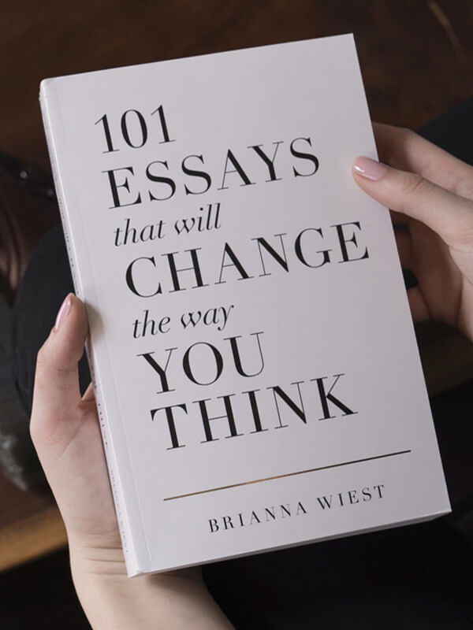

Які питання вирішує Регресивна терапія?

Травмуючі ситуації в житті
Відносини
Родові програми
Пошук Призначення

Регресія (лат. Regressus -
зворотній рух) - Повернення до попередніх етапів розвитку.
Регресія є процесом, в результаті якого людина повертається до раніше пройдених етапів,
станів і способів функціонування, які були до проблеми, з якою звернулися.
Це глибока робота зі спогадами.
Я регресолог.
Моїм фундаментом до становлення як регресолога, стали вивчення психології в її суті. Також практична езотерична філософія, де я взяла базу світогляду. А вже навичка самоусвідомлюватись та бачення причинно-наслідкових зв’язків дозволили мені
сприяти змінам та зціленню в інших людей. Співпрацюючи з ними на інформаційно-енергетичному рівні.
Я вмію задати питання, які проведуть від початку рефлексії про проблему, до глибинних усвідомлень власних обмежуючих переконань.
Моя задача в роботі надати простір та супровід для пропрацювання проблем. Відкрити інструмент для отримання нових варіантів рішень та зцілення.
Колись Я почула фразу, яка стала однією з ключових у моєму житті: Призначення – це інструмент, через який ти шукаєш відповіді та пізнаєш Світ. Мені важливо не тільки розвивати себе через діяльність, а й сприяти розвитку в інших. Тож я визнала свое Призначення і почала рухатись в іншу сторону своєї реалізації.
Мій маніфест по життю: змінювати Світ на краще через позитивні зміни в собі.
Я усвідомлюю, що все через що я пройшла в житті, всі люди та події, об'єм до якого я виросла було необхідним, щоб сьогодні робити те, що я роблю.
Передбачається, що на сеансі ви будете вдома або, в крайньому випадку, з особистого робочого кабінету, якщо ви в ньому одні і можете закритися на ключ.
Місце потрібно вибирати так, щоб не доводилося хвилюватися, що хтось вас почує, і не боятися говорити все, що ви будете усвідомлювати протягом сеансу (до 3-х годин).
Якщо під час сеансу ви вдома не одні, краще заздалегідь попередити домашніх, щоб вас не турбували: не заходили до кімнати, не зверталися до дрібних питань. Якщо у квартирі гарна чутність, можна запропонувати їм подивитися щось у навушниках, а також створити для вас, по можливості, умови тиші.
Залишіть собі запас часу до та після сеансу: 15 хвилин до та 15-30 хвилин після. Перед сеансом, щоб встигнути зібратися з думками і розслабитися, а після сеансу плавно і комфортно отямитися.
На початку зустрічі розташуйтеся перед камерою так, щоб вас було видно до сонячного сплетіння. Під час сеансу найкраще розміститися на будь-якій горизонтальній поверхні, де вам буде тепло та комфортно.
На час сеансу вимкніть звук на телефоні та всі спливаючі сповіщення на тому пристрої, з якого розмовляєте. Якщо ви працюєте з телефону або планшета, підготуйте підставку, щоб не тримати її в руках.
Можете налити собі склянку води або чаю. Не варто багато їсти і пити перед сеансом за 1-2 години, щоб не виходити зі стану трансу для того, щоб сходити до туалету, але ви не повинні бути голодними.
Також не рекомендується пити алкоголь за день до сеансу.
Заздалегідь перевірте швидкість інтернету, якість зв'язку, справність мікрофона та веб-камери.
Консультація-розмова з розбором вашого запиту. Заглиблення в стан релаксації, без повноцінної регресії.
Пропрацювання одного запиту. Ви дослідите причинно-наслідковий зв'язок, отримаєте необхіний інсайт, який допоможе покращити сферу вашого життя або тему, над якою ви працюєте.
Пакет для відчутних змін. Ви отримаєте розширені відповіді на декілька запитів, поетапно розвернете заблокований в вас ресурс. Отримаєте порцію інсайтів та знань, які розширятимуть ваше бачення себе.